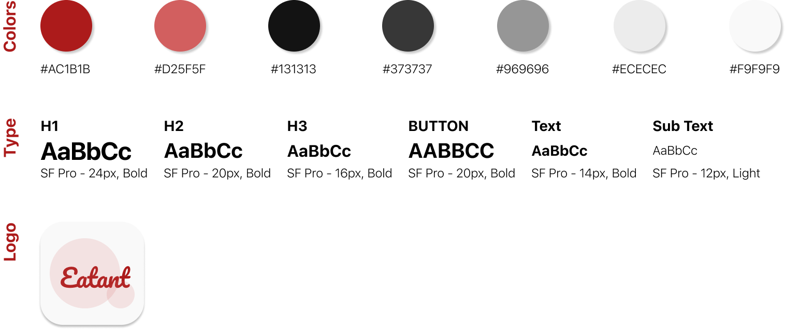

Eatant · Mobile
An intuitive and natural mobile application for booking restaurants
Eatant is a restaurant appointment service that primarily allows users to book restaurants within seconds. With current booking applications, the processing of booking is sometimes confusing, jumping from one screen to another. Eatant aims to fix that by redesigning and simplifying the booking process, allowing users to schedule their meal appointments with the most efficiency and effectiveness. It can deliver better restaurant booking experiences, relieve users' cognitive load and make them more likely to use our app instead of others. All of these could contribute in increasing revenue for future work.
Starting, I asked myself a few questions. Who is the primary user? What goals do they have? Why would someone want to use this app? Is there any difference between this app and its competitors? After interviewing five participants to learn about their daily routines, eating habits, the motivation, frequency and reasons to et outside as well as basic situations of using other restaurant booking apps or websites, it became evident that the goals they wanted to accomplish all fell within the same categories: booking restaurants easily and quickly without any additional burden to consider.
Unable to serve
Hurried meal
...
Allergic
Dinner Party
...
Education: UCL graduate
Family: Lives alone
Occupation: Junior developer
“I used to ask my friends to take numbers
every ten minutes to make sure we won't miss our turn. It's so exhausting.”
● Enjoy her meals in a comfortable place.
● Spend less time waiting in the queue for a meal.
“When my food is finally served, I found I only have 20minutes to finish it and then need to go back to work.”
Lucia just finished her M.S. at UCL and now works as a junior web designer in a technology start-up. During the weekend, Lucia enjoys time cooking at home and buying different ingredients to try new dishes. Due to her tight schedule on workdays, she can only eat outside, but some of her favourite restaurants are very popular during peak times. She can’t always get what she wants but turns to fast food.
content test - persona B
To get a
feel for what the core of the app would look like when put in front of me, I took the time
to draft each screen of the app on paper and ensured that the elements that would make it to
digital wireframes would be well-suited to address user pain points.
During
sketching, I prioritized a quick and easy booking process to help users save time. After a
few iterations, the digital wireframe is shown below, designed on feedback and findings from
the user research.
Bias Show Up!
1. Unknown Thick Lines and Rectangles
Most participants could not understand what these thick lines and rectangles mean in the
low-fidelity prototype.
I tried to avoid bias during the user
research, but it still sneakingly happened when I was conducting the first usability study.
As a designer, I am familiar with the meanings of lines and rectangles, hence I took it for
granted that they could also infer the meaning of the different figures.
2. Misleading Text and Pattern
Many participants thought the 'Book' text was a book button to make an appointment. They kept clicking it but did not receive any feedback.
Users Want...
1. A More Intuitive Way to Indicate Booking
2. See Menu Directly
More Findings!
1. Unnecessary steps and jumps in the booking process
The mockup on the left can not show the information about the date, time and number chosen on the same screen. Users need to jump from three submodules to complete their selection.
2. Important information should take more space
As the most important part to book a restaurant, choosing the date, time and guest number, it took up a small percentage of the entire screen. Users may miss this part and click "BOOK NOW". Even though the system would remind users to fill in the needed information, it could increase users' cognitive load.
01 No Predetermining Selection
Many existing products provide a function bar for selecting the date, time and number on their homepage or search page. Users usually would not notice them. Even after they have made choices in advance, it is difficult to change them on the booking screen, and sometimes they even have to go back to the search screen to change the selection. Some products even set default selection for users, they often do not notice that until the last few steps of the booking process.
02 Intuitive and Informative Profile
Managing the information about the restaurant in an easy-to-understand way is one of the
goals that helped drive this project as far as it did. A lot of the time, users are
distracted by overwhelming information and need to keep swiping the screen up or down to
find the information they want.
Eatant places the most important part- booking a restaurant at the forefront, using three
tabs to separate different information. Users could easily switch among them.
03 Seamless Booking Process
Instead of forcing users to go backwards and forwards between pages, jumping from different
interfaces, Eatant provides a simple and delightful user experience for users to select and
fill all information on the same page. They can easily schedule and book a restaurant with a
few clicks.
Eatant also provides a user-friendly confirmation page, assuring users have the right to
withdraw their choice at any point before they make their final decisions and receive
effective feedback at every step of the way.
04 Easy-to-Track Schedule System
Users can directly view their current in-progress appointment by clicking the Schedule at the navigation bar. Swipe left to view or search restaurants that have been successfully booked in the past; while swiping right to view the one that has been cancelled but can be easily rebooked by clicking a button.
Utilizing a slightly dark but not dull red felt like the perfect fit for Eatant's branding. It helps evoke physical energy, lust, passion, and desire for food, providing them with a happy and joyful feeling to using the app. The main typeface of choice for the app is SF Pro. I felt this typeface fit the app well due to its versatility through uppercase and lowercase styling, as well as bold and light text fills.

This is the first project that was done independently by myself. It was a really great experience as
I had the chance to go through the whole designing process and this allowed me to realize my own
shortages. During the research and design phases, I kept telling myself that the first thing to
avoid bias and stereotypes is to realize them. Even though I wrote to remind me, bias still showed
up. It's a long way to go indeed.
The first idea coming up for the app is only the beginning of the process. Usability studies and
peer feedback influenced each iteration of the design. And the design can always go better to become
more user-centred.